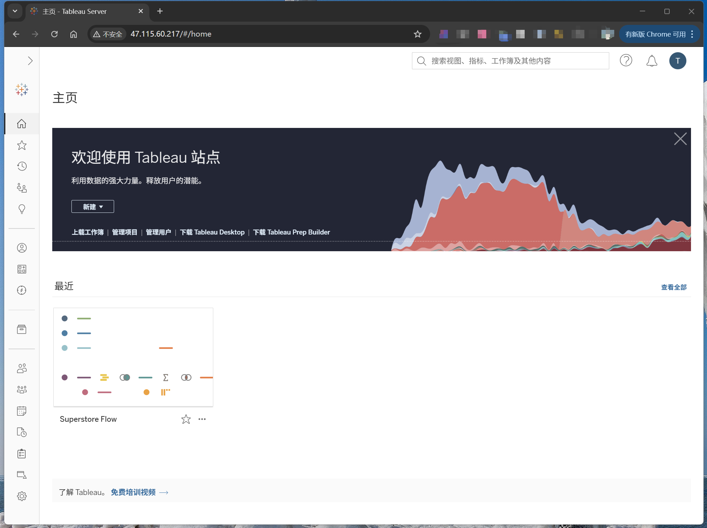

Tableau Server 快速部署
以阿里云 ECS 为例
分析和商业智能（ABI）是一个总称，包括应用程序、基础设施、工具以及最佳实践，这些应用程序、基础设施和工具能够访问和分析信息，以改进和优化决策与绩效。[1]
1 概要
笔者近期为一家母婴连锁企业选型分析和商业智能平台，最终采用了 Tableau。作为国外主流 ABI 软件，国内相关实战资料极为稀缺，特此补充本人部署经验，供同好参考。
在本指引帮助下，预计部署耗时不超过 2 小时。实际耗时因个人熟练程度而异。部署所用阿里云服务器按用量计费，约 5 元每小时。
请注意，由于该企业 ABI 项目首期投入预算有限，因此优先选择了单节点部署方案。如有条件，建议参考 Tableau Server 企业部署指南进行更完善的部署。
2 前提条件
你应了解命令行工具的基本操作。如不熟悉，建议通过 AI 指引，利用手头设备和类 bash 命令行工具，先熟悉进入不同文件夹的主要方法。
如尚未注册 Tableau 官网账号，请前往 Tableau 官网注册。登录后方可查看 Tableau Server 软件包下载链接。
如尚未注册阿里云账号，请前往阿里云官网注册。注册并登录后，方可订购本例所需的 ECS 资源。
请结合 Tableau Server 发行说明，选择你希望部署的版本。本例实测版本为：2023.1.22。主要因为之后的版本，没有激活试用许可证的选项，还需要联系销售处理。测试结束后，若预算充裕，笔者倾向安装最新版本以获得最新特性、安全性。
从历史支持和最新版适配角度看，Tableau 目前对 Windows 及 Red Hat Enterprise Linux (RHEL)、Ubuntu 支持较好。Windows Server 优势在于图形化界面，但依赖管理较为繁琐，且官方支持的 Windows Server 版本在阿里云需额外购买，约 0.22 元每小时。Red Hat 为商业操作系统，需额外付费，镜像费用约 1.25 元每小时。因此本例选择 Ubuntu 22.04 64 位作为服务器操作系统。
据官方文档[2]，单节点部署 Tableau Server 的最低生产硬件推荐配置如下：
此处为简化流程，暂不考虑部署 Tableau Prep Conductor。
3 订购 ECS
- 在阿里云首页，依次点击“产品”、“精选产品”、“云服务器 ECS”。
- 在产品概述页面，点击“立即购买”。
- 在自定义购买页面：
- 付费类型选择“按量付费”。请注意，实际生产环境建议采购前与云厂商销售协商，包年包月价格更为优惠。
- 地域建议选择企业数据中心所在地。
- 实例筛选处 vCPU 选择“16 vCPU”，内存选择“128 GiB”。
- 在筛选结果中，规格族因测试场景选择“通用算力型 u1”即可。
- 生产环境 Tableau 官方推荐“内存型 r5”[3]。
- 镜像依次点击“公共镜像”、“展开其他镜像”、“Ubuntu”，然后选择“Ubuntu 22.04 64位”。
- 系统盘类型默认“ESSD Entry”，容量调整为“50 GiB”，生产环境建议至少“100 GiB”。
- 公网 IP 勾选“分配公网 IPv4 地址”。
- 带宽计费模式选择“按使用流量”。
- 带宽峰值选择 100 Mbps，否则下载安装包会很慢。
- 安全组依次点击“新建安全组”、“普通安全组”。
- 登录凭证选择“密钥对”。
- 登录名选择 ecs-user。该用户为操作系统普通用户，无系统级权限，但可通过 sudo 临时获得 root 权限。
- 若未创建密钥对，请点击“创建密钥对”，并按指引操作。
- 回到实例订购页面，选择刚创建或已有的密钥对。
- 点击确认下单。
4 安装 Tableau Server
进入前述订购的 ECS 实例控制台，点击“远程连接”，再点击“通过 Workbench 远程连接”下的“立即登录”。在跳转后的 Workbench 登录界面，连接方式默认选择“免密连接”，用户名默认“ecs-user”，点击“登录”。登录成功后，将跳转到终端，并显示类似如下信息：
Welcome to Ubuntu 22.04.5 LTS (GNU/Linux 5.15.0-136-generic x86_64)
* Documentation: https://help.ubuntu.com
* Management: https://landscape.canonical.com
* Support: https://ubuntu.com/pro
System information as of Mon Jun 9 04:19:24 PM CST 2025
System load: 0.11 Processes: 232
Usage of /: 6.2% of 48.85GB Users logged in: 0
Memory usage: 0% IPv4 address for eth0: 172.16.22.198
Swap usage: 0%
Expanded Security Maintenance for Applications is not enabled.
48 updates can be applied immediately.
32 of these updates are standard security updates.
To see these additional updates run: apt list --upgradable
2 additional security updates can be applied with ESM Apps.
Learn more about enabling ESM Apps service at https://ubuntu.com/esm
New release '24.04.2 LTS' available.
Run 'do-release-upgrade' to upgrade to it.
Welcome to Alibaba Cloud Elastic Compute Service !升级服务器所有已安装软件包至最新版本：
sudo apt-get update
sudo apt-get upgrade上述命令会出现如下提示，输入 Y 并回车：
Reading package lists... Done
Building dependency tree... Done
Reading state information... Done
Calculating upgrade... Done
The following upgrades have been deferred due to phasing:
ubuntu-drivers-common
The following packages have been kept back:
cloud-init
The following packages will be upgraded:
apparmor apport apport-core-dump-handler apt apt-utils distro-info-data fwupd gir1.2-glib-2.0 grub-common grub-efi-amd64-bin grub-efi-amd64-signed grub-pc
grub-pc-bin grub2-common ibverbs-providers intel-microcode krb5-locales libapparmor1 libapt-pkg6.0t64 libarchive13t64 libfwupd2 libglib2.0-0t64 libglib2.0-bin
libglib2.0-data libgssapi-krb5-2 libibverbs1 libk5crypto3 libkrb5-3 libkrb5support0 libnetplan1 libnss-myhostname libnss-systemd libpam-systemd librdmacm1t64
libsqlite3-0 libsystemd-shared libsystemd0 libtraceevent1 libtraceevent1-plugin libudev1 libxml2 linux-libc-dev linux-tools-common net-tools netplan-generator
netplan.io open-vm-tools openssh-client openssh-server openssh-sftp-server python3-apport python3-netplan python3-pkg-resources python3-problem-report
python3-setuptools python3-update-manager systemd systemd-dev systemd-resolved systemd-sysv tzdata tzdata-legacy ubuntu-pro-client ubuntu-pro-client-l10n udev
update-manager-core update-notifier-common wireless-regdb
68 upgraded, 0 newly installed, 0 to remove and 2 not upgraded.
Need to get 47.0 MB of archives.
After this operation, 3,751 kB of additional disk space will be used.
N: Some packages may have been kept back due to phasing.
Do you want to continue? [Y/n] 更新过程中，系统可能会提示 SSH 配置文件冲突，选择“keep the local version currently installed”，即保留当前本地修改的版本（不替换）。
更新过程中，系统会提示需要重启哪些操作系统服务，保持默认选项（带 *），按下 Tab 键切换到“OK”，回车即可。后续遇到类似情况，同样处理即可。
在终端输入如下命令，切换至官方要求的安装目录：
cd /opt前往 Tableau Server 产品下载页，获取所需安装版本的下载链接。由于操作系统为 Ubuntu，请右键复制“.deb”后缀的 Tableau Server 文件链接地址，并删除“.deb”之后的多余字符。
下载 Tableau Server 安装包到 /opt 目录：
sudo wget https://downloads.tableau.com/esdalt/2023.1.22/tableau-server-2023-1-22_amd64.deb计算 Tableau Server 安装包文件的 MD5，并与 Tableau Server 产品下载页对应版本文件 MD5 比对，确保下载文件完整性：
md5sum tableau-server-2023-1-22_amd64.deb自动无交互方式安装 gdebi-core 软件包：
sudo apt-get -y install gdebi-core使用 gdebi 工具自动无交互方式安装 Tableau Server，并自动处理依赖关系：
sudo gdebi -n tableau-server-2023-1-22_amd64.deb5 初始化 TSM
由于本例是单节点部署，所以根据终端提示的命令初始化 TSM(Tableau Services Manager)：
sudo /opt/tableau/tableau_server/packages/scripts.20231.25.0225.1630/initialize-tsm --accepteula初始化完成后，需注销并再次登录。在本例中，直接关闭 ECS 终端浏览器页面。并重复前文所述 ECS 远程连接即可。
6 配置本地防火墙
参考配置本地防火墙中单节点配置，配置防火墙。系统可能会提示：
Failed to start firewalld.service: Unit firewalld.service not found.只需安装 firewalld 后继续单节点防火墙配置：
sudo apt install firewalld7 设置入站规则
在 ESC 实例的“网络与安全”选项卡下，配置如下入站规则，以放行公网流量访问 Tableau 服务管理器 Web UI。也可根据实际需求，限制访问来源 IP 到特定网段或 IP。
8 配置初始节点设置
参考登录到 Tableau 服务管理器 Web UI，可知 ecs-user 是初始化过程中创建的 TSM 授权组成员。登录 URL 为 http://ECS 公网 IP:8850/。
密码为 ECS 的登录密码，如提示密码错误，请重置 ECS 密码。
登录成功后，你应看到如下界面：
如果上述 URL 无法访问上述页面，还可尝试 https://ECS 公网 IP:8850/。
点击“启动 Tableau Server 试用版”，之后应出现如下界面：
按实际情况填写后，点击“注册”，之后应出现如下界面：
初始化完成后应出现如下界面：
点击“继续”，应跳转到新页面设置 Tableau Server 管理员账户，但笔者这里跳转失败，显示如下提示：
不用担心，只需远程连接 ECS，在命令行下用命令创建初始管理员用户：
tabcmd initialuser --server http://localhost --username 'tableau-admin'运行该命令后，命令行将提示输入管理员密码。设置好密码即可。
9 登录 Tableau Server
使用 http://ECS 公网 IP 或 https://ECS 公网 IP，应能访问如下界面：
使用刚才设置的管理员用户名及密码，登录成功后应出现如下界面：

10 安装后任务
请参考 Tableau 官方文档，按需实施。